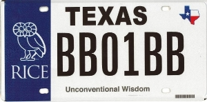

|
Go the extra mile for scholarships with Rice license plates! Available through the Texas Department of Transportation as part of their Collegiate License Plate Program, Rice plates are available for a $30 annual fee in addition to the regular motor vehicle registration fee. Of this amount, $22 goes to the Higher Education Coordinating Board dedicated to scholarships for students who demonstrate a need for financial assistance. Additional information, including a print-and-send application form, is available through the Texas DOT.  |